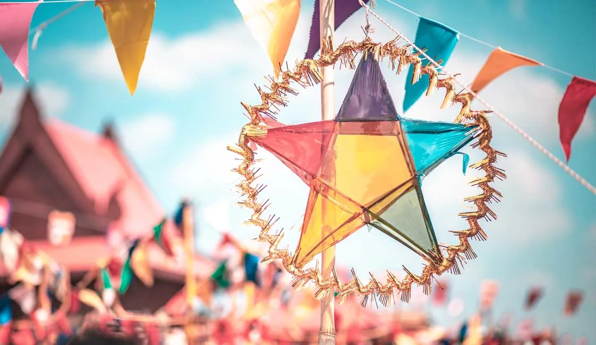

KHMER DANCE
Cambodia's premier performing art form is Khmer classical dance, or Robam Preah Reach Trop, a highly stylized dance form originating from the royal courts. Originally performed and maintained by attendants of the royal palaces, Khmer classical dance was introduced to the general public in the mid-20th century and became widely celebrated as iconic of Cambodian culture, often performed during public events, holidays, and for tourists visiting Cambodia.
KHMER MUSIC
Cambodian Art music is highly influenced by ancient forms as well as Hindu forms. Religious dancing, many of which depict stories and ancient myths, are common in Cambodian culture.

KHMER CEREMONY
The traditional Khmer wedding originally lasted seven days and seven nights. Later, it was reduced to three days and three nights, but by the 1980s it more commonly lasted a day and a half. The ceremony begins in the morning at the home of the bride and is directed by the achar.
KHMER RELIGION
Theravada Buddhism is the religion of virtually all of the ethnic Khmers, who constitute about 90% or more of the Cambodian population.